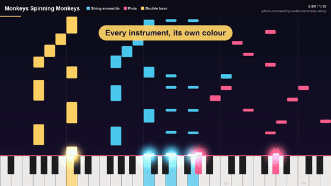
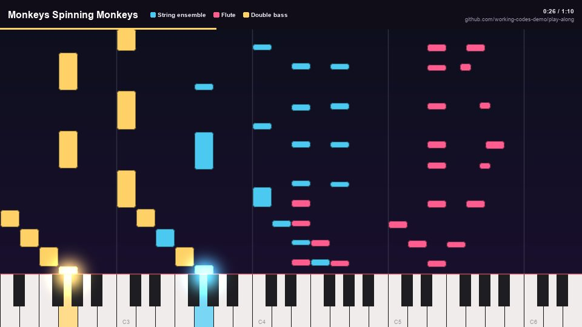
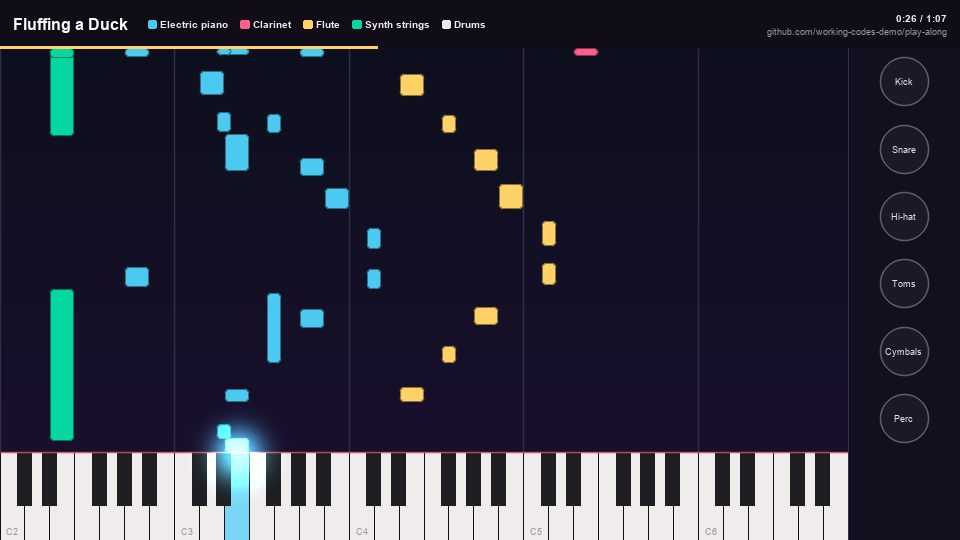
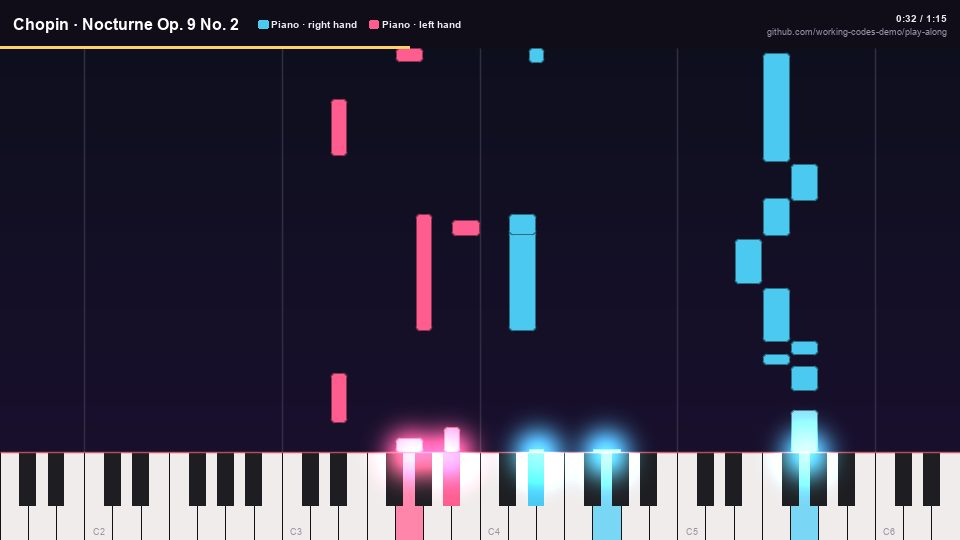
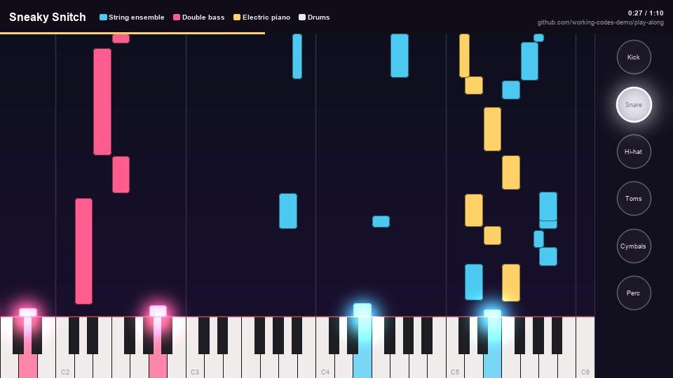

Any song or YouTube link in, a falling-notes play-along out, with every instrument in its own colour. Pick a song below: solo the clarinet and hear it on its own, slow it to half speed, loop the bar you are learning.





git clone https://github.com/working-codes-demo/play-along && cd play-along pip install -r requirements.txt python play.py --input song.mp3 # or a YouTube link